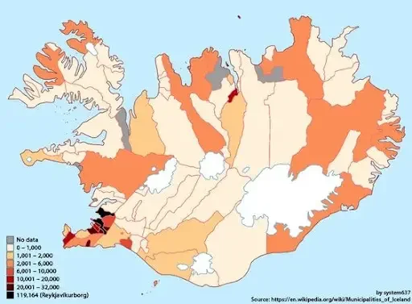

Iceland is a sparsely populated island nation located in the North Atlantic Ocean. As of 2021, its
estimated
population is around 366,130, with a relatively even distribution of men and women. The majority of the
population resides in urban areas, with the capital city of Reykjavik being the most populous city.
The population of Iceland is largely of Nordic descent, with most Icelanders being descendants of
Norwegian
and Celtic settlers who arrived in the 9th and 10th centuries. Immigrants make up a small percentage of
the
population, with the largest groups being Poles, Lithuanians, and Filipinos.
The population of Iceland is also aging, with a median age of around 37 years. The birth rate is
relatively low, with an average of 1.6 children born per woman, and the life expectancy is among the
highest in the world, with an average of 83 years.
Overall, Iceland's demography is characterized by a small, homogeneous population that is gradually
aging and becoming more urbanized.

Iceland's Geology
Iceland's geology is unique and fascinating, as it is located on the Mid-Atlantic Ridge, where the
Eurasian and North American tectonic plates meet. This geological activity has resulted in the formation
of a diverse range of landscapes, including volcanoes, glaciers, hot springs, geysers, and fjords.
Iceland is home to over 130 volcanic mountains, 30 of which are active. The island's most famous
volcano, Eyjafjallajökull, erupted in 2010, causing widespread disruption to air travel across Europe.
Iceland is also home to Vatnajökull, the largest glacier in Europe, covering over 8% of the country's
surface area.
Geothermal activity is another prominent feature of Iceland's geology, with hot springs and geysers
dotting the landscape. The country's capital city, Reykjavik, is heated entirely by geothermal energy,
which is harnessed from underground reservoirs.
The tectonic activity in Iceland also results in frequent earthquakes, and the island's location on the edge
of the Arctic Circle means that it experiences long periods of daylight in the summer and darkness in the
winter.
Overall, Iceland's geology is characterized by its unique location on the Mid-Atlantic Ridge, which has
resulted in the formation of a diverse range of geological features and landscapes.
Iceland offers a wide range of activities and attractions for visitors to enjoy, making it a
popular
destination for tourists. Here are some of the top things to do in Iceland:
These are just a few of the many activities that visitors can enjoy in Iceland, making it a
destination
that offers something for everyone.
Iceland's natural wonders: Iceland is home to a variety of natural
wonders,
including
glaciers, volcanoes, hot springs, and geysers. Visitors can take guided tours to explore
these
features and even go inside a volcano or hike on a glacier.
See the Northern Lights: Iceland's location on the edge of the Arctic
Circle makes it an
ideal
place to see the Aurora Borealis, or Northern Lights. The best time to see the lights is
from
September to April, and many tour operators offer Northern Lights tours.
Relax in a hot spring: Iceland is known for its geothermal activity, which
has created
numerous
hot springs and thermal baths. Visitors can soak in the warm, mineral-rich waters of the
Blue
Lagoon or visit one of the many public hot springs scattered throughout the country.
Go whale watching: Iceland is one of the best places in the world for
whale watching,
with a
variety of species, including humpback whales, orcas, and blue whales, commonly spotted
in the
waters around the island.
Visit Iceland's cultural attractions: Iceland has a rich cultural
heritage, and visitors
can
learn about the country's history and traditions at museums, art galleries, and historic
sites.
Reykjavik, the country's capital city, is also known for its vibrant arts and music
scene.
These are just a few of the many activities that visitors can enjoy in Iceland, making it a
destination
that offers something for everyone.